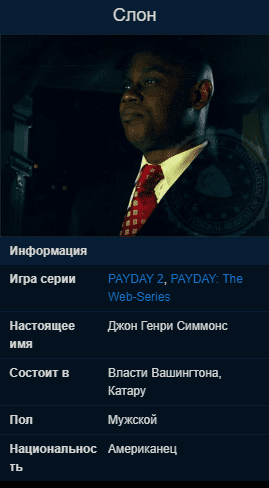

Слон
Описание

Впервые был показан в четвёртом эпизоде PAYDAY: The Web-Series.
Является членом совета Вашингтона. Нуждается в услугах команды PAYDAY во время политической гонки.
Не зная "настоящего" Симмонса, народ относится к нему с уважением.
Почти все его контракты так или иначе связаны с политикой и ориентированы на повышение авторитета Симмонса в обществе и устранением конкурентов, у которых есть улики на связь Слона с Crime.Net. Слон начинал как конгрессмен, а на момент ограбления Месть Хокстона уже упоминается как сенатор.
Был арестован 29 марта 2018 года в аэропорту по приказу Комиссара Гаррета, но отпущен спустя 37 дней из-за нехватки доказательств причастности Слона к криминальному миру.
Является одним из трёх новых "королей" Катару, "Слоном", остальные двое: Дантист и Гектор.
Заказывает ограбления
- Подстава с Картинами
- Нефтяное Дело
- День выборов
- Разборки на поезде
Раскрывается как крыса и был убит в ходе ограбления Месть Хокстона.